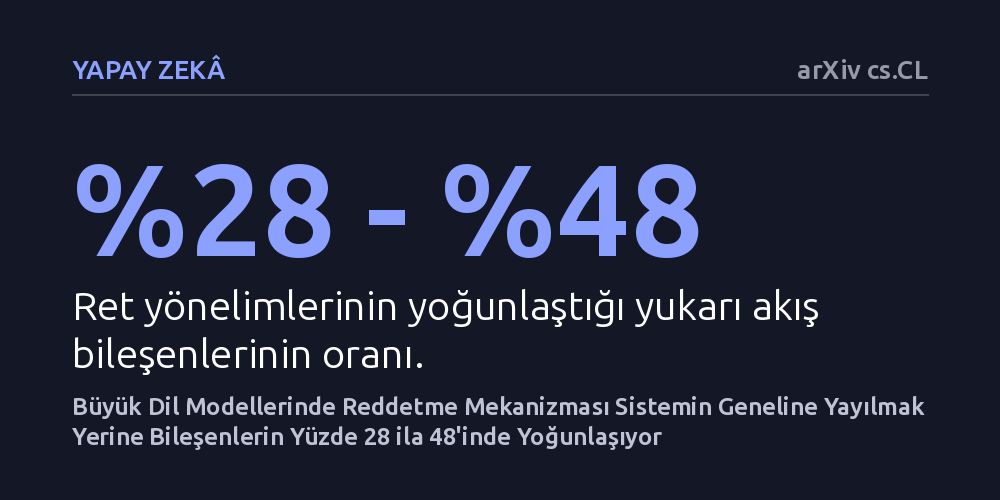

YAPAY-ZEKA · arXiv cs.CL · 2026-10-08
Araştırmacılar, büyük dil modellerinin kurallara aykırı istekleri reddetme mekanizmasının sistem içine nasıl dağıldığını dört açık modelde inceledi. Elde edilen bulgular, ret davranışının tüm modele yayılmak yerine bileşenlerin yalnızca yüzde 28 ila 48'inde ve boyutların yarısında seyrek olarak toplandığını gösterdi.
Yapay zekânın ret kararlarının devasa ağlarda gizemli biçimde dağılmak yerine belirli ve dar bir iç omurgada şekillendiğini göstererek güvenlik denetimini kolaylaştırıyor.

Büyük dil modellerine tehlikeli, yasa dışı ya da etik dışı bir komut verildiğinde modelin bu isteği yerine getirmeyi reddetmesi beklenir. Günümüzde bu güvenlik davranışı genellikle modellerin eğitim aşamasında pekiştirilir veya çalışma anında iç sinyallere matematiksel vektörler verilerek yönlendirilir. Ancak araştırmacılar, bir modelin bir isteği tam olarak hangi iç mekanizmayla reddettiğini ve bu kararın milyarlarca parametrenin geneline mi yayıldığını yoksa belirli odaklar tarafından mı üretildiğini uzun süredir tam olarak açıklayamıyordu.
Bu belirsizlik, yapay zekâ güvenliğini doğrudan ilgilendiren temel bir sorundur. Modellerin bir kararı iç katmanlarında nasıl aldığını tam olarak bilemezsek, onları hem kötü niyetli müdahalelerden korumak hem de aşırı korumacı davranıp meşru soruları haksız yere reddetmelerini engellemek zorlaşır. Ret sürecinin iç mimarideki yerini tam olarak belirlemek, yapay zekânın karar alma adımlarını şeffaf ve denetlenebilir hale getirmek açısından kritik önem taşır.
Araştırma ekibi bu soruyu yanıtlamak için parametreleri şeffaf biçimde incelenebilen dört farklı açık ağırlıklı büyük dil modelini mercek altına aldı. Deneylerde 'aktivasyon yönlendirmesi' adı verilen bir müdahale yöntemi kullanıldı. Bu yöntemde model baştan eğitilmez; bunun yerine model bir metin üretirken iç hesaplama katmanlarındaki sinyallere doğrudan müdahale edilir.
Yazarlar, modellerin içindeki dikkat mekanizmalarını ve çok katmanlı algılayıcı bileşenlerini adım adım ayrıştırarak inceledi. Sistemin her bir bileşeni tek tek veya gruplar halinde yönlendirilerek, modelin ret davranışını tam olarak sergilemesi için hangi parçaların zorunlu olduğu ve hangilerinin devreden çıkarılabileceği sistematik deneylerle test edildi.
Elde edilen bulgular, ret davranışının modelin tamamına rastgele dağılmadığını, aksine belirgin bir seyreklik sergilediğini ortaya koydu. İncelenen modellerde ret yönelimleri, kaynak bileşenlerin yalnızca yüzde 28 ila 48'ini kapsayan dar bir mekanizmada yoğunlaşıyordu. Üstelik yalnızca bu az sayıdaki bileşene müdahale etmek, tüm modele müdahale edildiğinde elde edilen ret etkisinin yüzde 88 ila 101'ini korumaya yetti.
Seyreklik yalnızca bileşen sayısıyla sınırlı kalmadı; bileşenlerin kendi iç boyutlarında da benzer bir yoğunlaşma gözlendi. Bu mekanizmaların içinde etkili yönlendirmenin, bilgi taşıyan artık akış boyutlarının yaklaşık yüzde 50'sinde toplandığı ve temel etkinliğin yüzde 85 ila 98'ini koruduğu belirlendi. Kısacası model, ret sinyalini hem az sayıda yapı taşı üzerinden hem de bu yapı taşlarının belirli boyut kanallarını kullanarak aktarıyordu.
Bu sonuçlar, transformatör mimarisine sahip dil modellerinde ret davranışının her yere dağılmış çözülemez bir sis bulutu olmadığını gösteriyor. Aksine, yapay zekânın güvenlik freni yapılandırılmış, yeri saptanabilir ve az sayıda bileşenden oluşan somut bir düzenekle inşa ediliyor. Yazarlar bulgularını özetlerken "ret davranışının bir transformatör genelinde dağınık şekilde kodlanmadığını, yapılandırılmış ve tanımlanabilir bir mekanizmayla bir araya getirildiğini" vurguluyor.
Yine de bu bulguları değerlendirirken ölçülü olmak gerekir. İncelenen mekanizma henüz sadece dört modelle ve ret göreviyle sınırlıdır. Ancak iç mekanizmanın bu derece odaklanmış olması, gelecekte modellerin güvenlik ayarlarını tüm sistemi bozmadan, sadece ilgili boyut ve bileşenlere hassas müdahaleler yaparak denetlemenin mümkün olabileceğini gösteriyor.